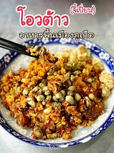

โอวต้าวจี้เปี่ยน
ร้านอาหารไทยที่มีชื่อเสียงด้านขนมจีนน้ำยาและมีบรรยากาศสบายๆ เหมาะสำหรับครอบครัว
ดูบนแผนที่
ร้านชมจันทร์
เสิร์ฟอาหารไทยที่อร่อยในบรรยากาศโรแมนติก พร้อมวิวทะเลที่สวยงาม
ดูบนแผนที่
ร้านวันจันทร์
มีเมนูอาหารไทยหลากหลายและบริการที่เป็นมิตร เหมาะสำหรับการสังสรรค์กับเพื่อน
ดูบนแผนที่

หมี่สะปำคุณยายเจียร
ชื่อเสียงด้านหมี่สะปำที่อร่อยและเครื่องเคียงต่างๆ ที่ทำให้คุณต้องกลับมาอีกครั้ง
ดูบนแผนที่
ขนมจีนป้ามัย
ร้านขนมจีนที่มีน้ำยาหลายแบบให้เลือก โดยเฉพาะน้ำยากะทิที่ได้รับความนิยมสูง
ดูบนแผนที่
ขนมจีนสะพานหิน
มีขนมจีนที่รสชาติดีและเป็นที่รู้จักในท้องถิ่น เสิร์ฟพร้อมเครื่องเคียงที่สดใหม่
ดูบนแผนที่
โกอ่างซีฟู๊ด
ร้านซีฟู้ดสดใหม่ที่มีเมนูอร่อยและบริการที่รวดเร็ว
ดูบนแผนที่
คุณจี๊ดยอดผัก
เน้นเมนูเพื่อสุขภาพ ด้วยผักสดจากฟาร์ม พร้อมน้ำจิ้มรสเด็ด
ดูบนแผนที่
ร้านหมูกรอบ จี้ฮอง
ร้านชื่อดังสำหรับหมูกรอบที่มีรสชาติกรอบอร่อย ที่คุณต้องลอง
ดูบนแผนที่
ล้งข้าว
ร้านอาหารไทยที่ให้บริการข้าวสวยร้อนๆ กับเมนูอร่อยมากมาย
ดูบนแผนที่
ร้านใต้ต้นมะม่วงภูเก็ต
ร้านที่ให้บรรยากาศร่มรื่นใต้ต้นมะม่วง เสิร์ฟอาหารไทยแบบดั้งเดิม
ดูบนแผนที่
ข้าวต้มเขารัง
ร้านข้าวต้มที่มีเมนูพิเศษต่างๆ ให้เลือก พร้อมรสชาติที่กลมกล่อม
ดูบนแผนที่
ไม้หมอน ฟอเรสต์
สัมผัสบรรยากาศธรรมชาติที่ร้านไม้หมอน พร้อมอาหารอร่อย
ดูบนแผนที่

หมี่ต้นโพธิ์ ภูเก็ต
ร้านหมี่ที่มีเอกลักษณ์เฉพาะตัว เสิร์ฟพร้อมน้ำซุปเข้มข้น
ดูบนแผนที่
ขาหมูโบราณ
ร้านขาหมูที่มีสูตรดั้งเดิม รับประกันความอร่อยทุกจาน
ดูบนแผนที่